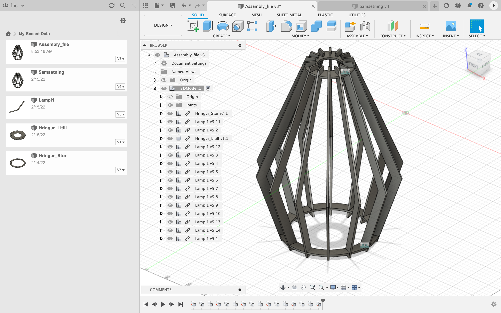
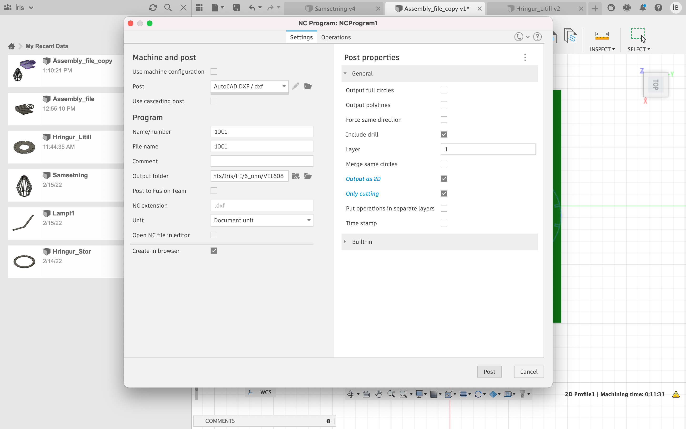

Project 2
Computer aided cutting
The objective
The objective of this project was twofold. On one hand we were supposed to use a vinyl cutter to cut out a shape of our choice on a 100cmx50cm vinyl paper. On the other hand we were supposed to design a parametric item that could be created with a laser cutter and put together with press fits. The material we had to work with was a 500mmx500mm pinewood or acrylic plate.
Laser cutting
Preparation
The first thing I had to do was decide what to create for the project. I started by reading through projects created by students in previous years, then I googled "plywood pressfit ideas" and browsed through various pressfit works and ultimately decided to make a lamp shade with plywood. Below you can see the inspiration I built my lamp on:
Designing my pressfit
After deciding what to do, I headed to Youtube to watch tutorials on how to design an item like this in Fusion 360. Two of the videos I viewed can be found here and here. I decided to do a similar pressfit to the one on the photo above with simple joints along the top and bottom of the lamp shade. The final design consisted of 14 vertical strips that connect to two circles, one smaller circle which then connects to a lightbulb and another one to keep the strips together at the bottom. Initially I sketched the design I wanted on my iPad, below you can see the sketch:
Fusion 360
I decided to draw my lamp shade in Fusion 360, as recommended by Hafliði, our teacher. I downloaded Fusion 360 on this site as well as Inkscape on this site. Inkscape is used for exporting a drawing from a software like Fusion and creating a file appropriate for the laser cutter.
The design is drawn parametric, here you can see a Fusion drawing of one of the strips for the lamp shade with appropriate measurements as well as after extrusion.
Here you can see a demonstration of how the circles were drawn, I used the circular pattern tool in Fusion to easily create the joints on the circles with equal distance between them all.
Below you can see an extruded version of one of the circles.
After creating the items, they had to be assembled together. Here below is a screenshot that shows the assembly of one circle and one strip. The other 13 strips were added with the circular pattern tool and lastly the second circle was added.

In order to transform the assembly into a 2D format for lasercutting, I watched the following three videos: video 1, video 2, video 3. I started by duplicating my lamp shade component so that I can "flatten" all of the units, put on one sheet for laser cutting.
Before exporting the 2D view of the components to Inkscape I had to measure the kerf of the laser cutter and adjust the drawings accordingly. This part of the project was a group project and I worked on it with Iðunn and Guðný, you can read more about the execution here.
The kerf we measured for the laser cutter was 0.164mm and in order to accurately cut out the design, the kerf had to be adjusted in Fusion 360. In order to adjust the kerf according to this project in Fusion, the Tool bar should be opened, the epilog laser cutter helix is chosen and made like the photo below shows.
I moved the pieces closer together in order to save space and proceded to prepare the file for cutting. First I captured position, then created a sketch of components and finally move to manufacturing in Fusion. I created a Setup in fabrication, then a 2D profile of my components, as can be seen in the photos below. The green photo shows the route the laser travels while cutting.
Next I set up a simulation, which showed the laser moving.
I exported the file as DFX with the following settings and moved on to Inkscape.

Inkscape
The next step was exporting the file to Inkscape before cutting. I opened my DFX file in Inkscape and created a sheet with the measurements 500mmx500mm in shape properties and moved onto the drawing onto the sheet. I opened Document Properties and set the line width to 0.02. Then I saved the file as a PDF-file, with the settings shown in the picture, onto a USB-key and moved to the computer by laser cutter.
Laser cutting in FabLab
I opened my file in the computer connected to the laser cutter. I set the speed to 20%, power to 100%, frequency to 10% as well as thickness to 4mm.

Here you can see some pictures taken during the cutting process.


Problems with the laser cutting
The plywood plate I used for the lamp shade was not completely flat which ultimately lead to the laser not being able to cut through the plate entirely in some places. On most of my components it did not matter but I had to re-cut one strip for the lamp shade. This was easy to fix and did not cause any more problems.
The final product
Here you can see photos of the assembled final product.


Vinyl cutting
For the other part of the project I decided to make a star stamp. I started with drawing a star in Inkscape. I created a sheet, like in the laser cutting project, set the size of the sheet to 50mmx100mm and placed my star on the sheet. I traced the drawing and exported the outlines. This process was done on the computer connected to the cutter.

Next I inserted the vinyl paper into the cutter. I decided to use red paper. I chose "Select sheet" and "EDGE" on the printer itself and started the printing. Down below you can see the finished star stamp.


Workload
| Time | Work |
|---|---|
| 1 hour | Conceptual work |
| 4 hours | Fusion360 - drawing and exporting file |
| 1 hour | Kerf test |
| 3 hours | Laser cutting in FabLab and assembling the object |
| 1 hour | Vinyl cutting - Inkscape drawing and cutting |
| 7 hours | Updating the website |
| 17 hours | Total time |